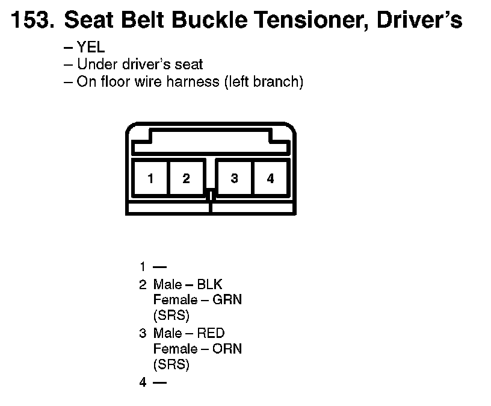
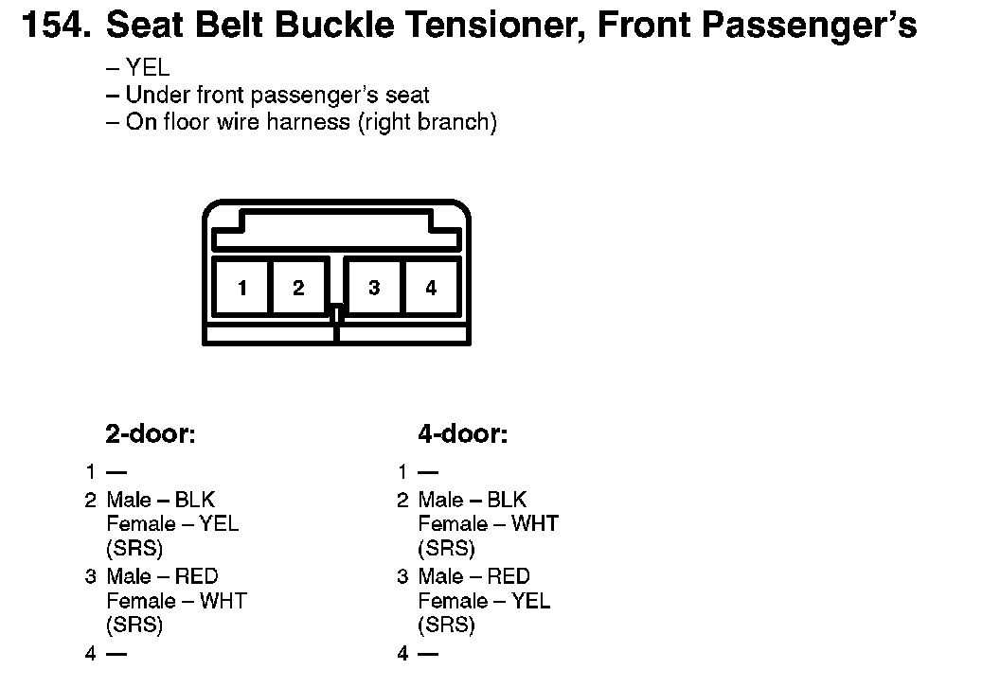
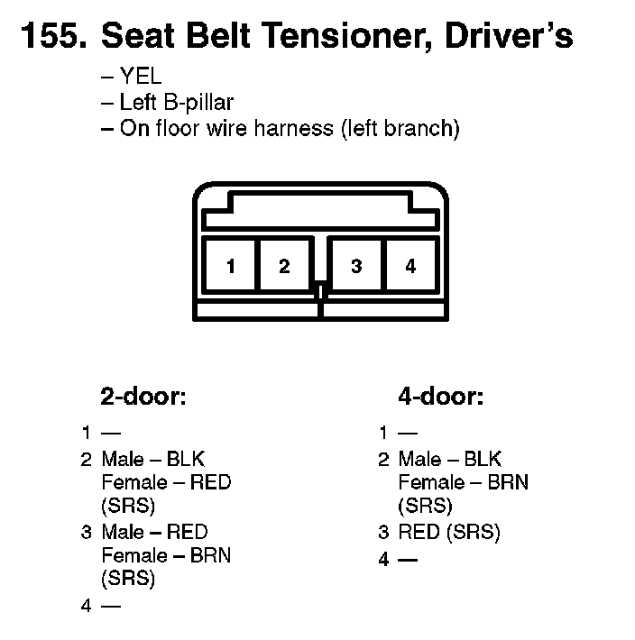
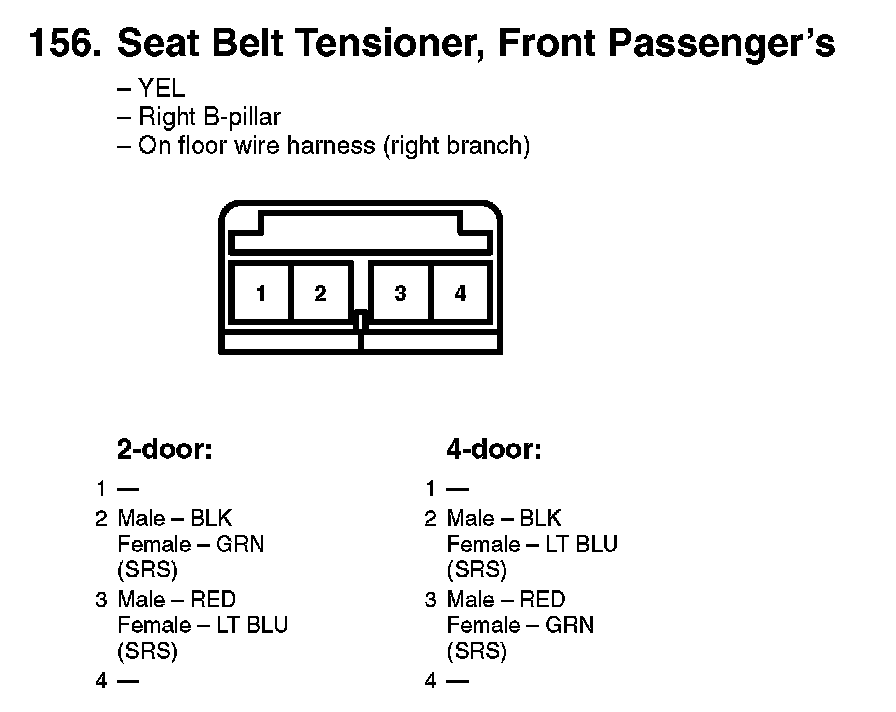

Seat Belt Tensioner: Diagrams
153. Seat Belt Buckle Tensioner, Driver's:

154. Seat Belt Buckle Tensioner, Front Passenger's:

155. Seat Belt Tensioner, Driver's:

156. Seat Belt Tensioner, Front Passenger's:
